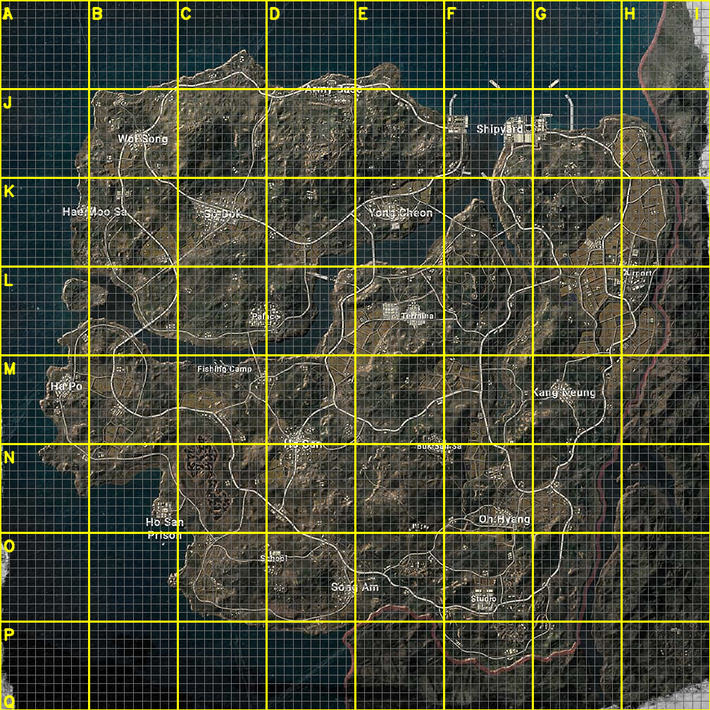
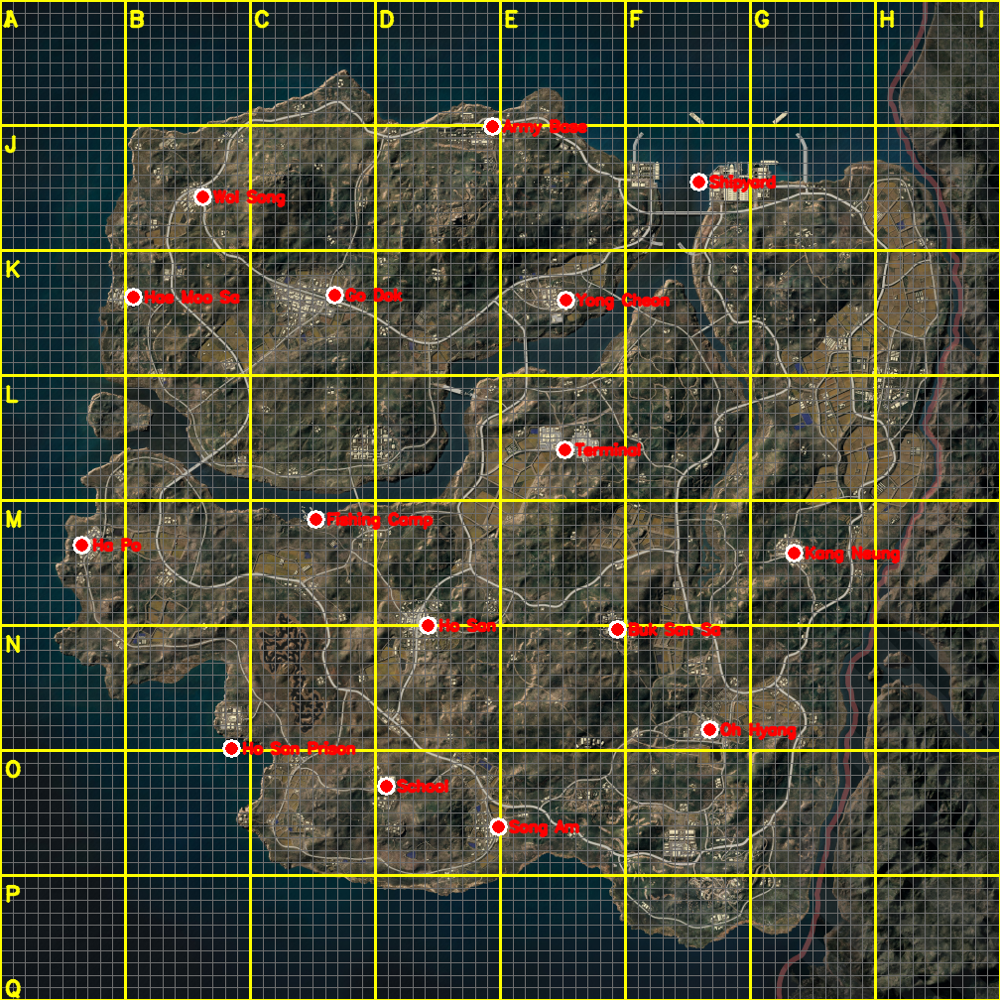

2026-05-25 · 고해상도 OCR(easyocr)로 위치 자동 추출 · 에란겔식 A~I/I~Q 격자 (1km 청록 + 100m 흰선)


| 지명 | gx | gy | 출처 |
|---|---|---|---|
| Army Base | 0.493 | 0.126 | OCR 1.00 |
| Shipyard | 0.699 | 0.182 | OCR |
| Wol Song | 0.203 | 0.197 | OCR |
| Hae Moo Sa | 0.133 | 0.297 | OCR 0.79 |
| Go Dok | 0.335 | 0.295 | 추정(OCR 누락) |
| Yong Cheon | 0.566 | 0.300 | OCR 0.79 |
| Terminal | 0.565 | 0.450 | 추정(OCR 누락) |
| Fishing Camp | 0.316 | 0.519 | OCR 0.94 |
| Ha Po | 0.082 | 0.545 | OCR 0.89 |
| Kang Neung | 0.794 | 0.553 | OCR 0.70 |
| Ho San | 0.428 | 0.625 | OCR |
| Buk San Sa | 0.618 | 0.629 | OCR |
| Ho San Prison | 0.232 | 0.749 | OCR 0.97 |
| Oh Hyang | 0.710 | 0.730 | OCR |
| School | 0.386 | 0.786 | OCR |
| Song Am | 0.499 | 0.827 | OCR 1.00 |
① Go Dok·Terminal은 OCR이 못 잡아 추정값이야 — 이 둘만 특히 확인해줘.
② liquipedia 목록의 Airport·Studio·Palace는 OCR에도 안 잡혔어. named 맵에 라벨이 없거나 작아서야. 위치 알면 알려줘.
③ 나머지 14개는 OCR 자동 추출이라 꽤 정확할 거야. 칸 어긋난 것만 알려줘.
확정되면 myungdang_pov_v3.py에 TAEGO_CITIES로 넣어서 태이고 검출에 도시 라벨·자기장 거리를 붙여.